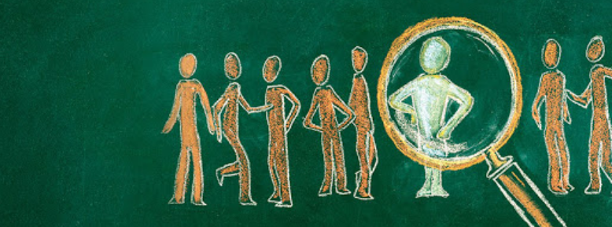

Towards post-humanism
April 03, 2021In every time period and place on the planet Homo sapiens has had different more or less sophisticated conceptions on issues such as time, the human, society, morality and many other things that are fundamental to understand and act in the world around us.
Our contemporary era is no exception, for a long time it has been marked by ideas and worldviews associated with our specific time, so we can say that in almost the entire planet certain shared notions associated with modernity prevail to a greater or lesser extent, especially in western societies; ones that put Homo sapiens as a special being in terms of its distinction from other species and even also the center of the world in general. These notions are associated with the term that we can understand as human exceptionalism, or in other terms just humanism, which include various issues related to anthropocentrism, rationalism, individualism, human-nature dualism and various notions about the nature of Homo sapiens that still in some way or another continue to prevail to this day.
Humanism, in general, has left behind other old ways of seeing the world, such as primitivist notions, theocentric ways of thinking and many other pre-modern frames of thought and organizational systems. Thus, just as these previous visions have hindered progress, today, the same thing happens with humanism in general since it does not adapt to the reality of contemporary scientific knowledge and to actual problems that we are facing, and in this way also hinder and block the appearance of other new forms of thought with new assumptions and concepts to face current historical problems.
As a result of this, highly problematic notions have been manifested such as environmental exploitation, mistaken notions of human behavior, problematic social ideologies, as well as many other notions that today remain obsolete before the advance of contemporary scientific knowledge and social capabilities. In that way, the notions associated with anthropocentrism are not only wrong, but also have various negative manifestations for well-being, development and progress in general since it is used as a reference frame to understand problems and as well as to decide on solutions and strategies to use. Because of these, we are suffering from many kinds of problems such as climate change and environmental collapse, inefficient and self-destructive socio-organizational models, and many other existential threats.
Towards post-humanismAll this leads us to have to overcome the anthropocentric notions of understanding Homo sapiens, the society in which we live and the world of which we are part. That is why we must begin to conceive reality from new perspectives and frameworks of thought that manage to give us new approaches aimed at solving the problems we face today, as well as opening opportunities for change and progress towards a prosperous future.

To overcome all this, we must embrace post-anthropocentric and post-humanist thinking in general, which is simply an open framework of thought that goes beyond the notions and frames associated with humanism, and by that embracing new forms of post-anthropocentric ideas of understanding reality, among these we highlight the following:
SystemismUnderstanding the main ontology of reality as systems, implies that everything that exists is a system or a part of a system, with its processes and properties, and to understand them, the notions related to methodological individualism and collectivism have to be abandoned; by that also we must reframe the place of us in the universe, especially by understanding that Homo sapiens is not external to the environment, nor is it special in the historical evolution, but that it is another biological entity that is part of larger systems, and composed of smaller systems.
This implies rejecting dualistic notions such as reason-reality, man-world, natural-artificial or the static and linear vision of historical events or socio-organizational systems; by this, we must begin understanding that reality is chaotic, structural, changing and governed by processes that can be understood -at least partially- through systems thinking.
Post-speciesismUnderstanding that Homo sapiens is not special or very different from other species, and assume that we are just another form of life part of the long process of evolution in this small planet; that implies getting along with the idea that we are not the only species being capable of understanding reality, nor experiencing subjective sensations, and by that abandoning the notion of human exceptionalism and the premises that this entails.
This implies respecting other sentient beings or intelligent life forms, as well as extending the moral-ethical circle towards them, either to the animals that live with us on this planet, as well as to possible artificial life forms that may arise in the future.
TranshumanismThe notion that implies that our current state of affairs, both at the biological level as well as the socio-organizational one is not an ultimate product of nature -much less an immutable divine creation-, but is an imperfect and transitional configuration, and that means that can be changeable and improvable.
Thus, we can consider that we are always improvable at the corporeal, cognitive and socio-organizational level, especially through the application of the different fields of knowledge and applied technology, which together manages to overcome -at least partially- certain problems and disability that are inherent to us, as well as giving us new possibilities that we did not have before.
EnvironmentalismIt understands that the human being is not the center of the universe, nor of this planet, but that we are a biological species part of the environment, and also that the environment is part of us; which implies trying to have a harmonious relationship with the environment that surrounds us and also with the living beings that share this place with us.
All this implies putting at the center the conservation, restoration and care of the environment from a systemic, sustainable and resentful logic, which manages to guarantee the future of civilization and also the non-human entities that are here on planet earth
A post-anthropocentric futureNow we are in a transitional historical time when old anthropocentric values are beginning to vanish, especially because of their incapacity to respond to persistent and new problems that we have to face; and by this, new post-humanist values are arising, that are based on new frameworks, visions and perspectives, which are still open and waiting to emerge.